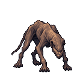
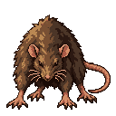

Descent into the grotesque
Ten draft beings: familiar predators become impossible bodies, then space, absence and scale become the encounter. Dark and gritty throughout. Underhound is selected as the first production subject. These paintings remain concepts; story identities, floors and finished sprites remain open.
Review notes and open decisions · Art direction · Underhound production brief · Compare the descent
The view control magnifies regions of the original painting. It does not create production cutouts or registered animation frames.
Omen
Review focus
Possible later presentation
Production selection pending. Water direction, orbit, voices and held interior views are still-image proposals; this gallery does not demonstrate live animation, sound or game integration.
Small-view study
A 320px-wide display of the complete painted shape-study strip. For contextual beings, shape alone does not explain the encounter.
Compare the descent
Look for a relationship between the early hounds and later anatomy without turning every being into the same creature. The final three explore incompatible perspective, absence and scale separately.
Existing family reference

Existing breach hound
Live native128 artwork. Concept detail and new shapes have not been converted into this production format.

Grounded starting point
The ordinary creature establishes a physical world before the descent starts breaking it.
Earlier drafts
The owner requested a single bell clapper and a different Sleeper silhouette. The revised drafts preserve those earlier paintings for comparison; their production selection is still open.
Bell with paired organs · Sleeper finger draft · First claw-like Sleeper